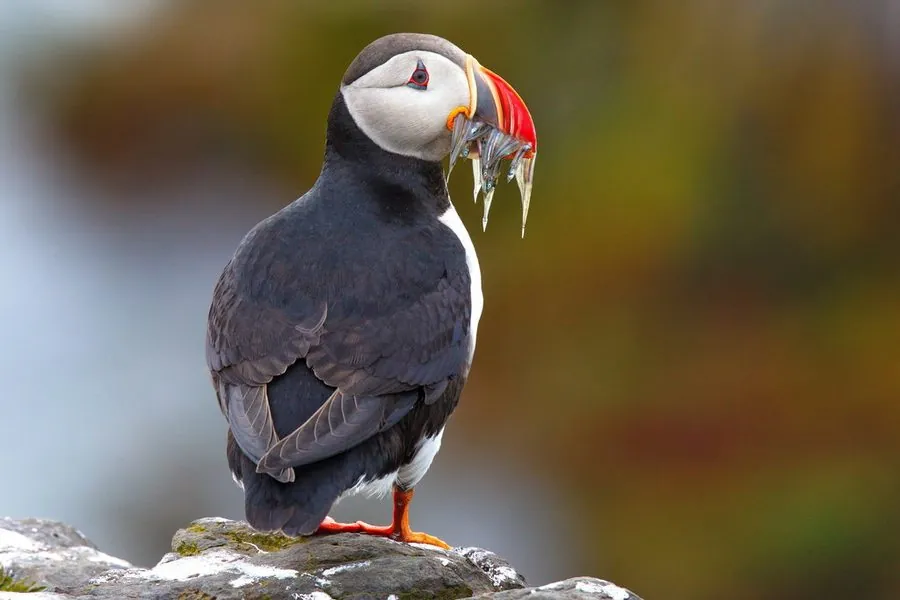

鸟类 · 动物界
北极海鹦 Fratercula arctica

黑白相间、喙色鲜艳的海鸟，繁殖期喙呈橙红蓝三色，能在水下快速潜水捕鱼，被称为“海上的小丑”。
- 分类
- 门脊索动物门纲鸟纲目鸻形目科海雀科属海鹦属
- 栖息环境
- 北大西洋的沿海悬崖、草坡和近海，多在岛屿上集群繁殖
- 地理分布
- 北大西洋，从加拿大东部、格陵兰、冰岛到挪威和英国北部
- 保护级别
- IUCN 易危（VU）；非中国分布物种
物种志
北极海鹦体长 26–29 cm，体重约 320–480 g，翼展 47–63 cm。它的身体大部分为黑色，胸腹部白色，脸部灰白，眼睛周围有特殊花纹；繁殖期喙变得粗大而鲜艳，呈橙红、黄、蓝灰相间的分块颜色，脚橙红色。非繁殖期喙会变暗、变小，脸部的花纹也褪去。
北极海鹦分布于北大西洋，从加拿大东部、格陵兰、冰岛到挪威和英国北部，主要在海岸悬崖上集群繁殖，冬季则漂泊在海上。它们以小鱼为主食，尤其是沙鳗和鳕鱼幼鱼，能潜入水下数十米捕鱼，一次可叼回十多条小鱼。繁殖期在岩缝和洞穴中产下 1 枚卵，孵化约 36–43 天，雏鸟由双亲轮流喂养约 6 周后独自离巢下海。由于海洋变暖和食物减少，部分种群数量下降，北极海鹦被列为易危物种。
形态与习性
- 食性沙鳗、鳕鱼幼鱼等小型鱼类
- 体长26–29 cm
- 体重约 320–480 g
- 翼展47–63 cm
- 繁殖每窝 1 枚卵，孵化约 36–43 天
- 寿命野外约 20 年
- 潜水能潜入水下数十米，用翅膀划水追鱼
趣味知识
- 繁殖期北极海鹦的喙会变得鲜艳，呈橙红、黄、蓝灰三色分块。
- 它一次可以叼回十多条小鱼，靠喙内的小刺固定猎物。
- 北极海鹦能潜入水下数十米，用翅膀划水追逐鱼群。
- 非繁殖期它们常年在海上漂泊，很少靠近陆地。